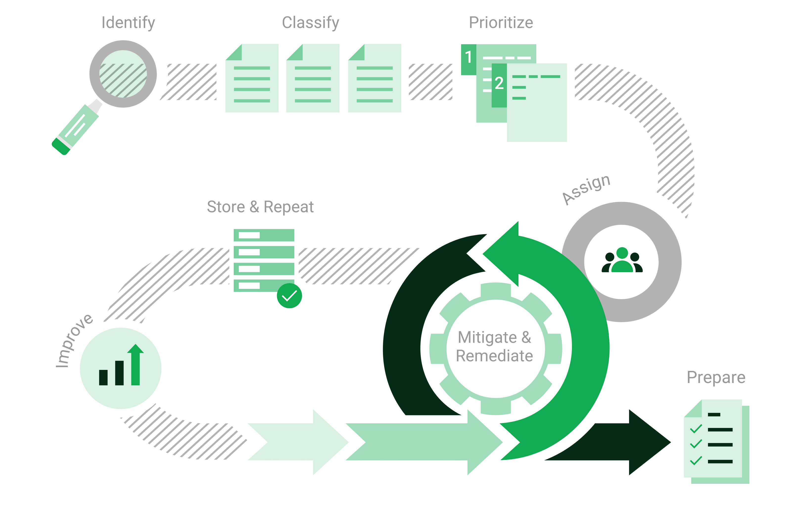

1 Введение¶
1.1 Управление уязвимостями¶
В ИТ-безопасности комбинация трех элементов влияет на поверхность атаки ИТ-инфраструктуры:
Киберпреступники, обладающие достаточным опытом, оборудованием и деньгами для проведения атаки.
Доступ к ИТ-инфраструктуре.
Уязвимости в ИТ-системах, вызванные ошибками в приложениях и операционных системах или неверными конфигурациями.
Если эти три элемента сойдутся воедино, вероятна успешная атака на ИТ-инфраструктуру.
Поскольку большинство уязвимостей известны и могут быть устранены, на поверхность атаки можно активно влиять с помощью управления уязвимостями. Управление уязвимостями предполагает взгляд на ИТ-инфраструктуру снаружи – точно так же, как это сделали бы потенциальные киберпреступники. Цель — найти все уязвимости, которые могут существовать в ИТ-инфраструктуре.
Управление уязвимостями выявляет слабые места в ИТ-инфраструктуре, оценивает их потенциальный риск и рекомендует конкретные меры по устранению. Таким образом, нападения можно предотвратить с помощью целенаправленных мер предосторожности. Этот процесс – от признания до устранения нарушений и мониторинга – осуществляется постоянно.


Рис. 1.1 Процесс управления уязвимостями¶
1.2 АК-ШУМКАР¶
АК-ШУМКАР — это устройство управления уязвимостями, доступное в аппаратной и виртуальной моделях. Он помогает компаниям и агентствам проводить автоматизированную и интегрированную оценку и управление уязвимостями.
1.2.1 Компоненты и область применения¶
Устройство состоит из ОС «Ак Шумкар» (ГОС), на которой установлен AK-SHUMKAR ENTERPRISE FEED, службы программного обеспечения, веб-интерфейса и, в случае физического устройства, специального оборудования. В канале представлены тесты уязвимостей (VT), которые службы используют для обнаружения существующих уязвимостей в проверяемой сети.
Поскольку новые уязвимости обнаруживаются каждый день, необходимо постоянно проводить новые тесты на уязвимости. «Ак Шумкар» анализирует CVE [1] сообщения и рекомендации по безопасности поставщиков и разрабатывает новые тесты на уязвимости. Лента обновляется ежедневно и, таким образом, всегда предоставляет последние тесты на уязвимости для надежного обнаружения новейших уязвимостей.
Устройство гибко в использовании и может использоваться для крупных предприятий, для средних и малых компаний, а также для особых случаев, таких как аудиты и тренинги. Благодаря технологии главного датчика устройство также можно использовать в секторах с повышенным уровнем безопасности.
1.2.2 Типы сканирований¶
Устройство обнаруживает уязвимости с разных точек зрения киберпреступников:
- Внешний
Устройство может имитировать внешнюю атаку для выявления устаревших или неправильно настроенных межсетевых экранов.
- Демилитаризованная зона (ДМЗ)
Устройство может выявлять реальные уязвимости, которыми могут воспользоваться киберпреступники, преодолевшие брандмауэр.
- Внутренний
Устройство также может выявлять уязвимости во внутренней сети, например, нацеленные на социальную инженерию или компьютерных червей. Из-за потенциального воздействия таких атак эта перспектива особенно важна для безопасности любой ИТ-инфраструктуры.
DMZ и проверки безопасности могут проводиться как без аутентификации, так и с аутентификацией. При выполнении процедуры с проверкой территорий устройство использует учетные данные и может обнаруживать уязвимости в приложениях, которые не работают как службы, но имеют высокий потенциальный риск (например, веб-браузеры, офисные приложения или средства просмотра PDF-файлов).
- Информация о сканировании веб-приложений
Сканер уязвимостей АК-ШУМКАР сканирует хосты, защищенные по доменному имени или IP-адресу. Однако URL-адрес веб-сайта состоит из большего количества частей, чем просто доменное имя или IP-адрес. Поскольку сканер устройства не обрабатывает другие части URL-адреса, он не может автоматически анализировать и проверять структуру веб-сайта. Следовательно, это не сканер безопасности веб-приложений (WASS). или HTTP-сканер.
Однако если сканируется хост, на котором запущено веб-приложение, и если существует известная уязвимость и подходящий тест на уязвимость включен в канал, устройство все равно может обнаружить уязвимость.
1.2.3 Классификация и устранение уязвимостей¶
Внешние уязвимости оцениваются в зависимости от их серьезности с использованием общей системы оценки уязвимостей (CVSS). Уровень серьезности можно использовать для определения того, какие уязвимости следует расставить по приоритетам при мерах по исправлению. Наиболее важными мерами являются меры, которые защищают систему от серьезных рисков и защищают от серьезных уязвимостей.
Принципиально есть два варианта борьбы с уязвимостями:
Устранение уязвимости путем обновления программного обеспечения, удаления уязвимого компонента или изменения конфигурации.
Реализация правила в межсетевом экране или в системе предотвращения вторжений (виртуальное исправление).
Виртуальное исправление — это кажущееся устранение уязвимости посредством компенсирующего контроля. Реальная уязвимость все еще существует, и киберпреступники все еще могут использовать ее, если компенсирующий контроль не сработает или если будет использован альтернативный подход.
Фактическое исправление или обновление уязвимого программного обеспечения всегда предпочтительнее виртуального исправления.
Сноски